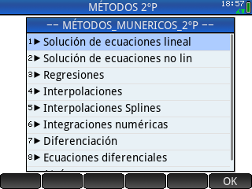

Métodos numéricos para calculadora HP-PRIME 2º parte

Programa para resolver sistemas de ecuaciones lineales, sistemas de ecuaciones no lineales, regresiones por diferentes métodos, inperpolaciones por diferentes métodos, integracion numérica por diferentes métodos, diferenciación y ecuaciones diferenciales mediante varios métodos.
El programa ha sido elaborado en base al libro Métodos Numéricos para Ingenieros del autor: Steven C. Chapra
Contenido:
Solución de ecuaciones lineales
Solución de ecuaciones no lineales
Regresiones
Regresón Lineal
Regresión Polinómica
Regresión Múltiple
Regresión General
Mediante Regresión Polinómica
Mediante Regresión Múltiple
Interpolaciones
Interpolación Lineal
Interpolación Cuadrática
Interp. Met. Lagrange
Interpolaciones Splines
Spline Cuadrática
Spline Cúbica
Método de la secante
Método del punto fijo
Método de muller
Método de bairstow
Descomposición LU de matrices
Descomposición LU método de Doolitle
Descomposición LU método de Crout
Descomposición LU método de Cholesky
Integraciones Numéricas
Método de los trapecios
Método de los trapecios múltiple
Método de Simpson 1/3
Método de Simpson 3/8
Cuadratura de Gauss
Integracion de Romberg
Por trapecios
Por simpson 1/3
Por simpson 3/8
Diferenciación
Ecuaciones diferenciales
Método de Euler
Método de Runge Kutta-1
Método de Runge Kutta-2
Método de Runge Kutta-3
Método de Runge Kutta-4
Sistemas EDO
Video con varios ejemplos
VIDEO